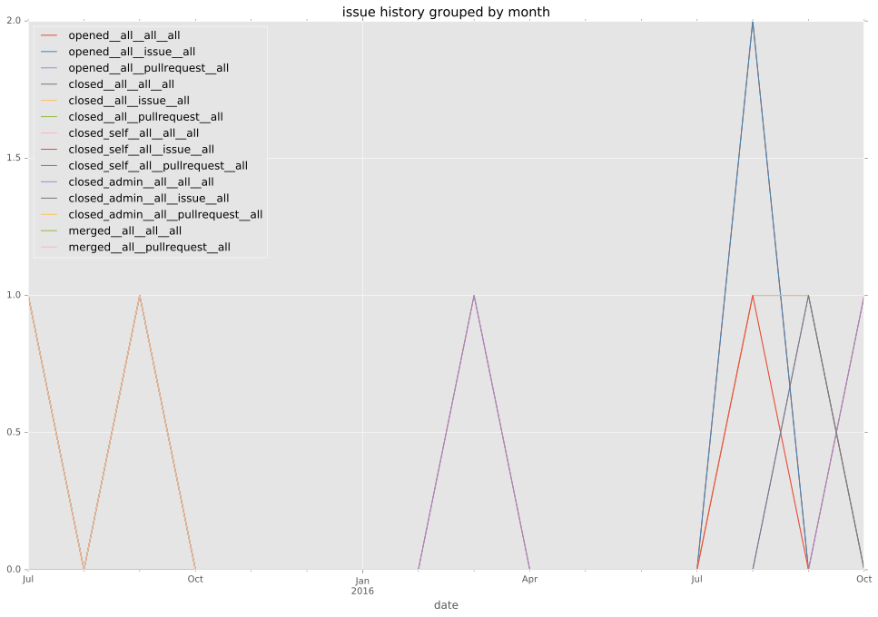
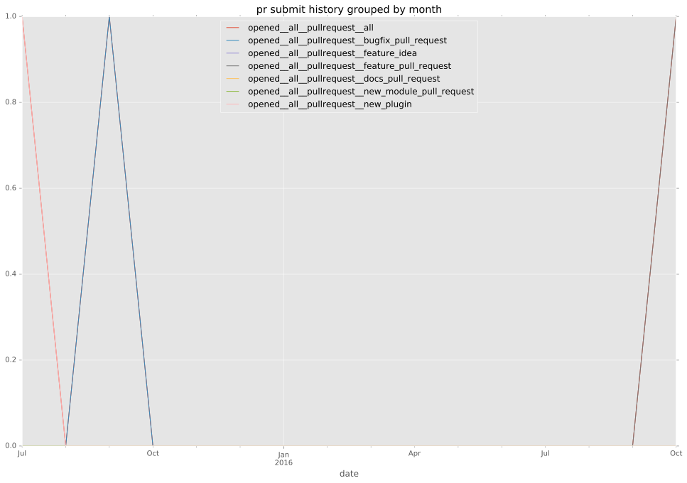
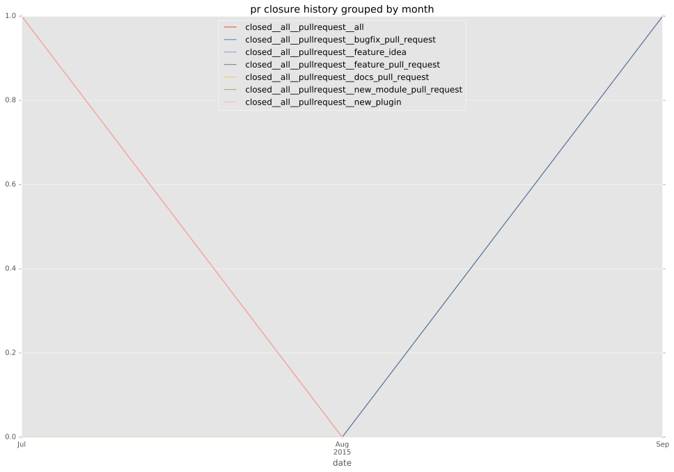
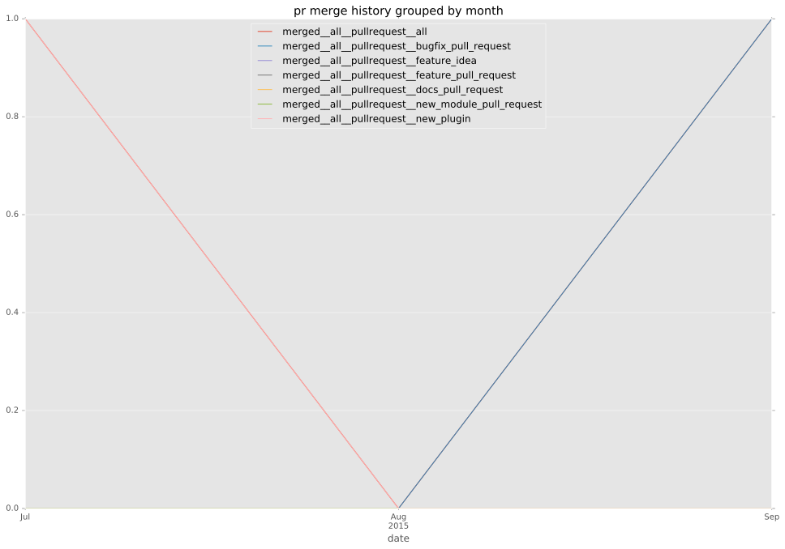
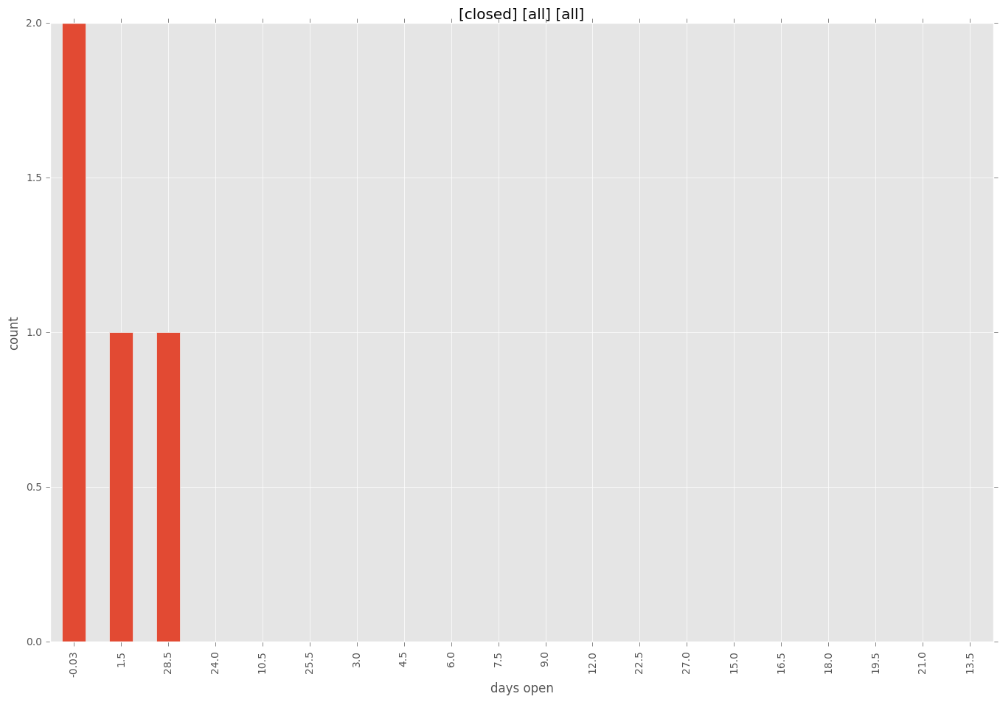
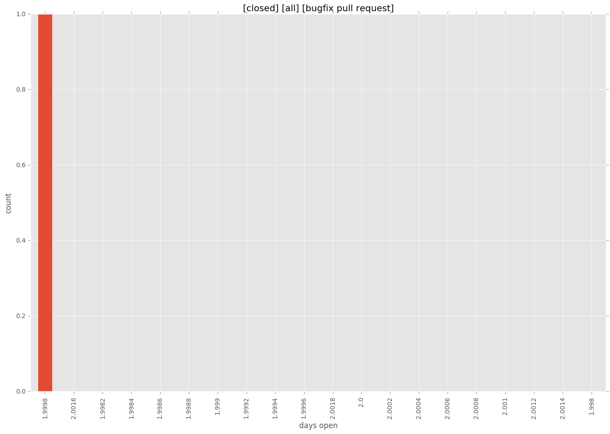
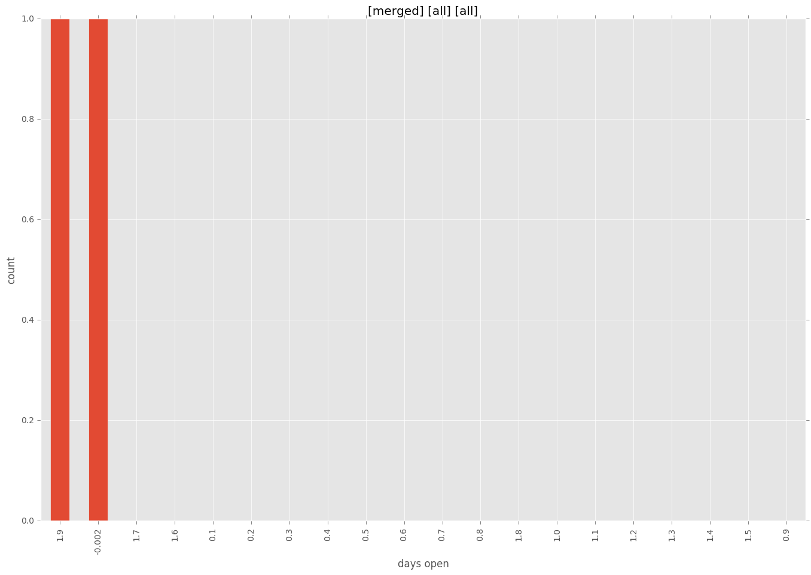
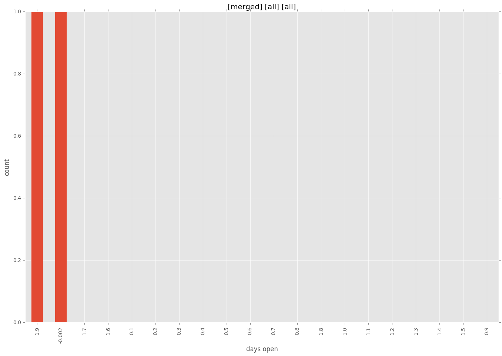

authors
- wimnat
maintainers
- wimnat
contributors
- wimnat : 9 commits
- bcoca : 1 commits
- abadger : 1 commits
total issue counts
bugfix pull request: 1
docs report: 1
pullrequest: 4
feature pull request: 2
issue: 2
new plugin: 1
bug report: 1
issue history

pullrequest history



days open by issue type
feature pull request
count: 0
std: nan
min: nan
max: nan
median: nan
mean: nan
all
count: 6
std: 11.9610478917
min: 0
max: 30
median: 1.0
mean: 5.66666666667
pullrequest
count: 0
std: nan
min: nan
max: nan
median: nan
mean: nan
docs report
count: 1
std: nan
min: 30
max: 30
median: 30.0
mean: 30.0
bugfix pull request
count: 2
std: 0.0
min: 2
max: 2
median: 2.0
mean: 2.0
issue
count: 0
std: nan
min: nan
max: nan
median: nan
mean: nan
new plugin
count: 2
std: 0.0
min: 0
max: 0
median: 0.0
mean: 0.0
bug report
count: 1
std: nan
min: 0
max: 0
median: 0.0
mean: 0.0
closures grouped by total days open




 
